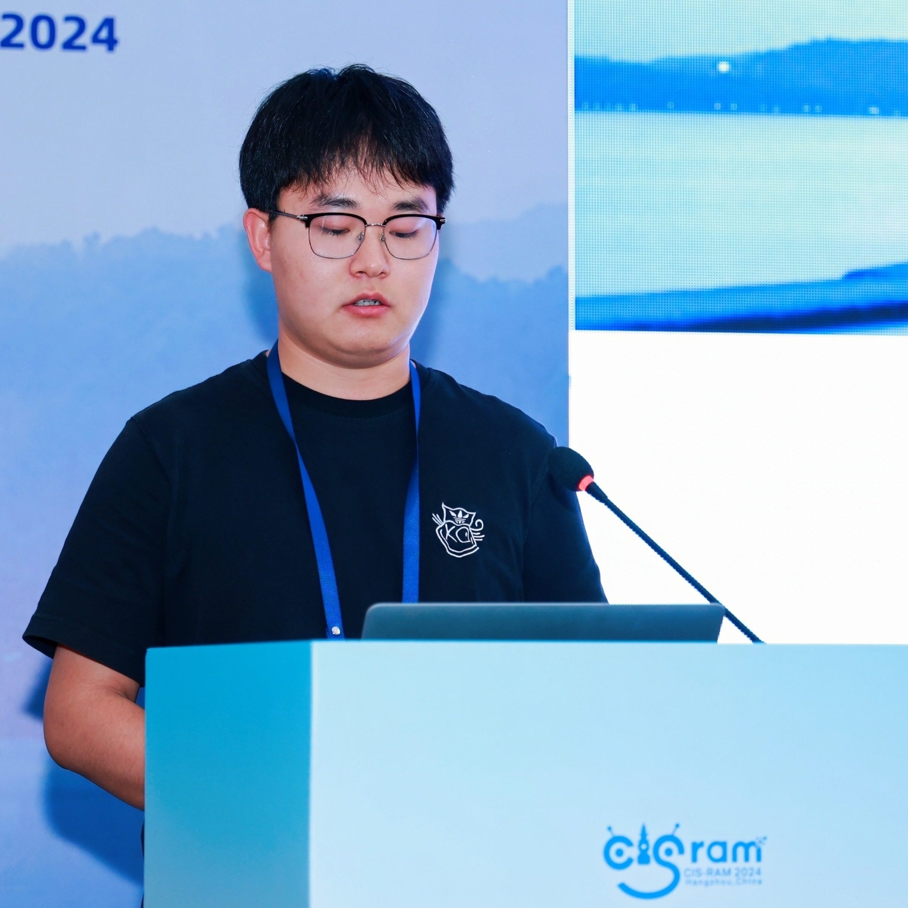

📞
17860271144✉️hongli@stu.xju.edu.cn📒 个人主页

导师：黄浩教授，新疆多语种信息技术重点实验室
研究方向：多语言语音识别、大模型、迁移学习、提示工程、语音合成
专业成绩：GPA 85.5/100（专业前20%）
主修课程包括：计算机科学与技术数学基础、矩阵分析、高级算法分析与设计、高级软件工程、机器学习、自然语言处理、深度学习、人工智能原理及应用等
GPA 2.92/4.00
主修课程包括：C语言程序设计、Java程序设计、Web前端开发技术、Linux 系统应用、Python 程序设计、数据库原理、数据采 集与存储、大数据处理、数据分析技术、大数据开发、数据可视化、遥感数字图像处理、人工智能等
指导老师：李海洲教授
参与语音技术相关研究，协助语音对话系统的开发与模型分析
指导老师：Eng Siong Chng 教授
跟踪语音大模型方向的研究前沿，参与相关科研项目交流
协助教学系统维护，参与软硬件安装和实验环境管理
训练语种识别模型，协助部署流式语音识别模型
设计基于眼动仪的视觉注意力辅助系统，支持听力障碍人群识别目标说话者语音
使用语音分离、识别等手段进行语音关键词检索，提升内容审核效率
多语言语音识别方向，涵盖低资源与富语种语音识别
Listen to the Speaker in Your Gaze
Hongli Yang, Xinyi Chen, Junjie Li, Siqi Cai, Hao Huang, Haizhou Li
11th IEEE International Conference on Cybernetics and Intelligent Systems and the 11th IEEE International Conference on Robotics, Automation and Mechatronics(CIS-RAM 2024)
CB-PSR: Adaptive Contextual Biasing for Prompt-driven Speech Recognition
Hongli Yang, Ziyuan Chen, Haowen Yin, Hao Huang
21st International Conference on Intelligent Computing (ICIC 2025)
Adapting Whisper for Parameter-efficient Code-Switching Speech Recognition via Soft Prompt Tuning
Hongli Yang, Yizhou Peng, Hao Huang, Sheng Li
26th Annual Conference of the International Speech Communication Association(Interspeech 2025)
Language-Aware Prompt Tuning for Parameter-Efficient Seamless Language Expansion in Multilingual ASR
Hongli Yang, Sheng Li, Hao Huang, Ayiduosi Tuohan, Yizhou Peng
26th Annual Conference of the International Speech Communication Association(Interspeech 2025)
Robust and Efficient Text-based Speech Editing using Noise Conditioning and Rectified Flow
Haowen Yin, Kai Wang, Hongli Yang, Hao Huang, Wushour Silamu
2025 International Conference on Acoustics, Speech, and Signal Processing(ICASSP 2025)
编程语言：Python、C、Shell、SQL
技术框架与工具：PyTorch、Kaldi、Spark、MongoDB、ELK Stack、Jupyter
熟悉自然语言处理、语音识别、SpeechLLM、深度学习、模型调优
掌握数据采集、分析、可视化及模型评估流程
英语六级（CET-6），普通话二级乙等
全国大学生数学建模竞赛省一等奖
“互联网+”“创青春”计算机软硬件组装类大赛三等奖
自治区学业奖学金、科技创新奖学金、道德风尚奖学金、社会实践奖学金
优秀志愿者、学生会优秀干事、社团联优秀干事、文艺体育积极分子等
青岛科技大学 学生工作助理委员会 宣传部部长（2019.09 - 2020.06）
青岛科技大学 校团委学生社团管理部 素拓部部长（2019.09 - 2020.09）
山东蒙阴大学生实践锻炼夏令营成员（2019.07 - 2019.08）